Sains Data & AI
Kompetensi mendalam di bidang Sains Data yang mencakup tata kelola data, visualisasi strategis, serta implementasi algoritma Machine Learning dan Deep Learning untuk solusi analitik yang presisi.
|
Dosen Sains Data & Digital Strategist yang berfokus pada AI Analytics, Web Management, dan Transformasi Digital untuk pendidikan dan industri.
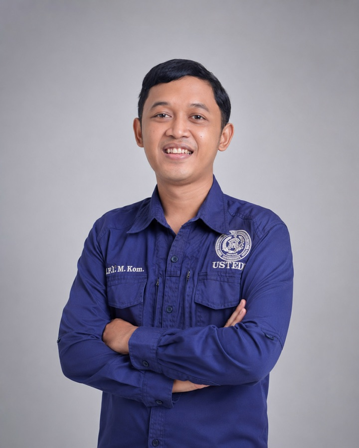
M.Kom AI ResearcherSaya Muhammad Rafi Haidar Arsyad, Magister Komputer (M.Kom) yang bergerak di persimpangan sains data, kecerdasan buatan, dan strategi digital. Keseharian saya mengisi ruang kelas, menulis jurnal terakreditasi, dan membangun sistem digital yang dipakai nyata oleh bisnis.
Bagi saya, data bukan sekadar angka di dashboard — data adalah cara memahami perilaku manusia, lalu mengubahnya jadi keputusan yang berdampak. Itulah benang merah dari semua yang saya kerjakan.
Fokus utama pengembangan solusi berbasis data dan teknologi pendidikan.
Kompetensi mendalam di bidang Sains Data yang mencakup tata kelola data, visualisasi strategis, serta implementasi algoritma Machine Learning dan Deep Learning untuk solusi analitik yang presisi.
Spesialisasi riset ekosistem Marketplace: analisis perilaku konsumen, optimalisasi layanan pelanggan, strategi penawaran produk, dan akselerasi trafik lewat manajemen Paid Ads yang terukur.
Keahlian strategis menggunakan instrumen pemasaran online seperti Google Trends dan Ubersuggest. Berfokus pada produksi konten kreatif, analisis tren performa, serta manajemen trafik demi memaksimalkan konversi digital.
Jejak profesional dalam ekosistem pendidikan, teknologi, dan pemasaran digital.
Politeknik Negeri Semarang
Univ. Sains Teknologi Ekonomi Digital Indonesia (USTEDI)
SMK Swadaya Semarang
PT Campus Data Media (Campus Digital)
Universitas Stikubank Semarang
Dedikasi akademik melalui publikasi jurnal terakreditasi SINTA dan literatur digital komersial.
Validasi keahlian di bidang pemasaran digital, teknologi jaringan, dan data science.
LSP Teknologi Digital
LSP Talenta Wirausaha Nusantara
Cisco Networking Academy · Intro The Networks
OpenEDG Python Institute · Algorithms & OOP
British Council EnglishScore · Score: 440
Rangkuman implementasi strategi digital, riset kolaborasi, dan peran sebagai edukator teknologi.
Berhasil menyelesaikan program inkubasi bisnis Kampus Merdeka di Politeknik Negeri Semarang.
Kolaborasi riset dengan Dosen Unisbank Semarang melalui pembuatan Mesin Otomatis Penyiram Air berbasis IoT untuk budidaya Jamur Tiram di Gunungpati, Semarang.
Menjadi Pembimbing Magang Siswa SMK Swadaya Semarang di jaringan retail Alfamidi, memastikan integrasi kurikulum dengan operasional praktik kerja nyata.
Unit bisnis profesional dengan manajemen digital terpadu.
Pusat Hijab Premium dan Fashion Wanita By Journey Scarves. Fokus pada penyediaan produk berkualitas tinggi.
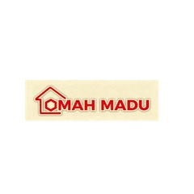
Pusat Serba Olahan Produk Lebah (Bee Pollen, Propolis, Madu Murni). Berkomitmen pada kemurnian alami.
Klik gambar untuk melihat rincian foto lebih jelas.
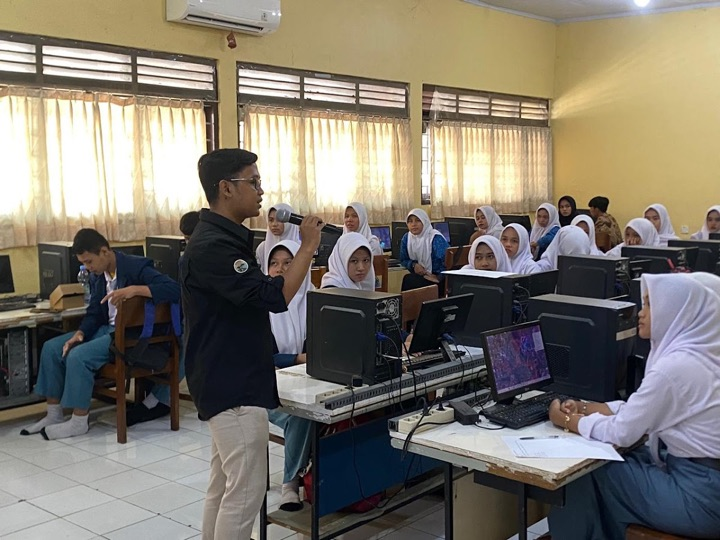
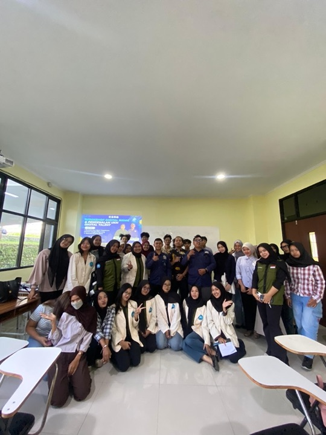
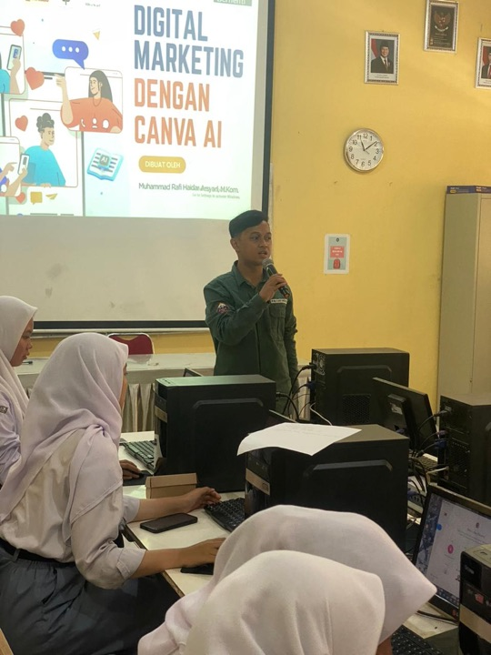
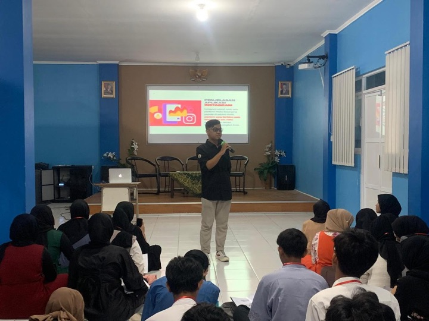
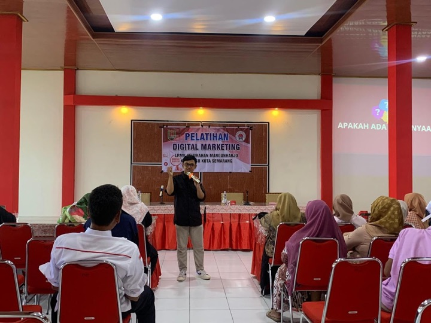
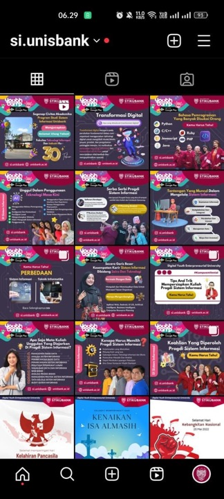
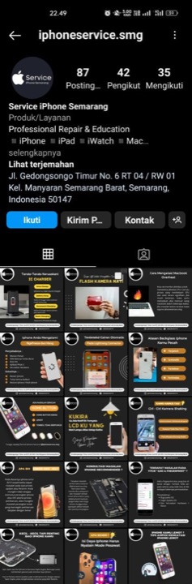
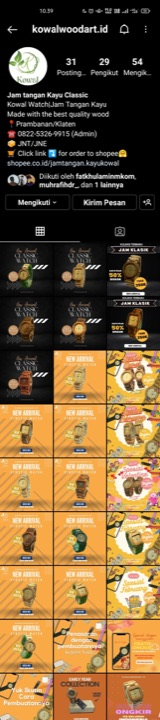
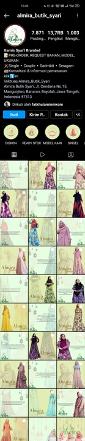
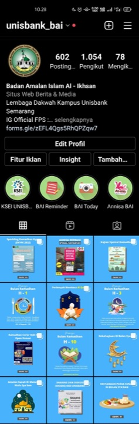
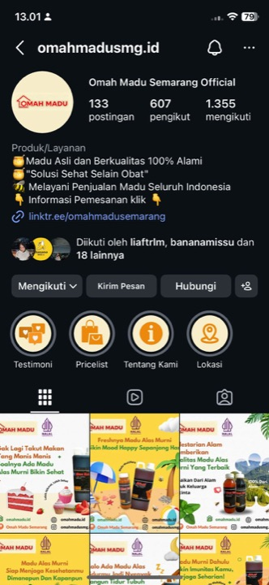
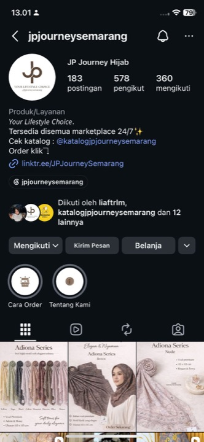
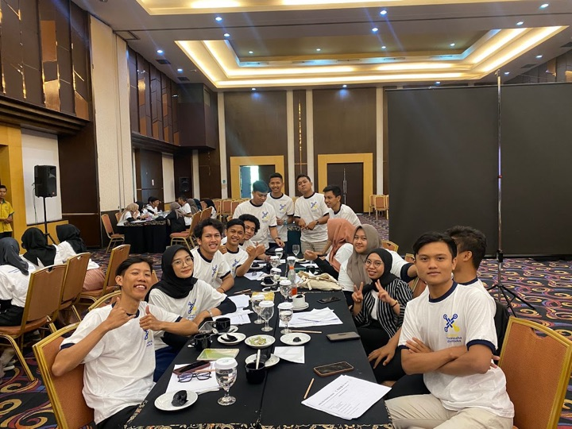
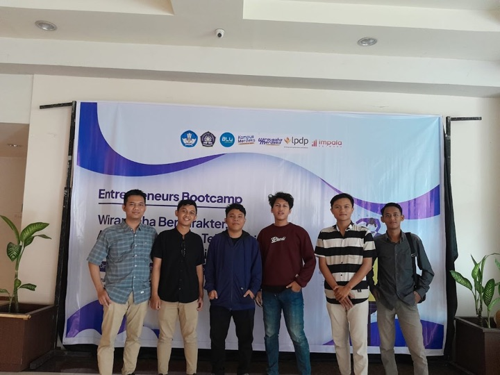
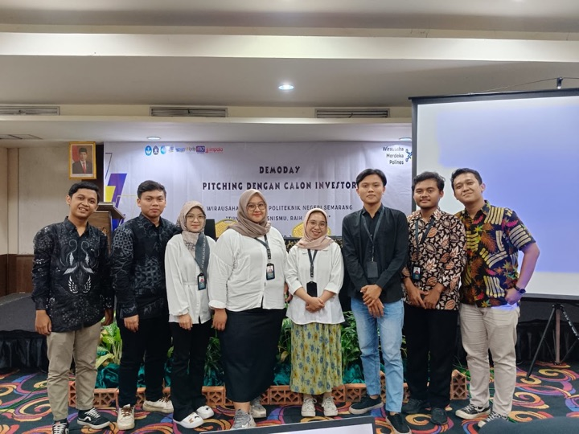
Terbuka untuk kolaborasi riset, workshop AI, pengembangan produk digital, maupun konsultasi strategi data & pemasaran.